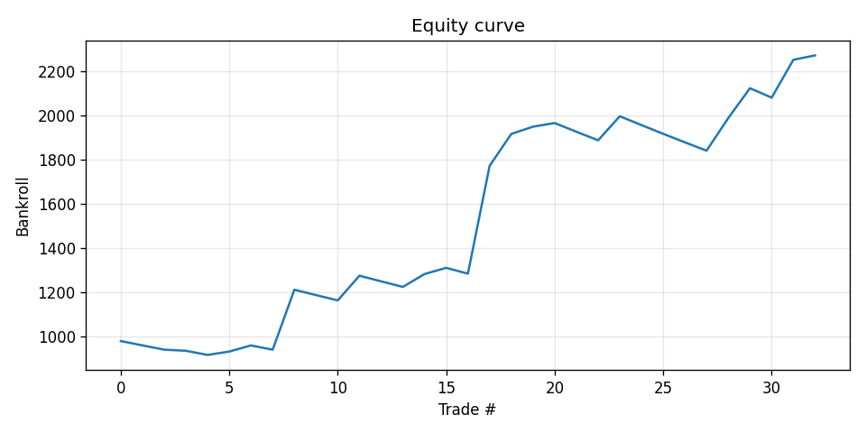
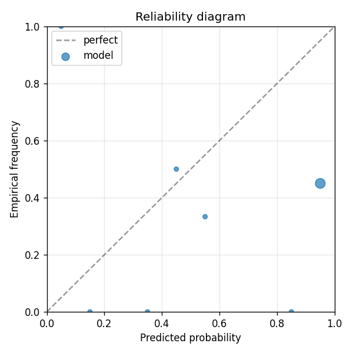

Deterministic synthetic market used by the E2E smoke test. The label is a noisy logistic of the first three numeric features. The market price is a noisy estimate of the truth so there is real, recoverable Brier improvement to discover.
| metric | value |
|---|---|
| brier_model | 0.4853617818468151 |
| brier_market | 0.36935207127407776 |
| brier_improvement | -0.11600971057273735 |
| accuracy_model | 0.45454545454545453 |
| accuracy_market | 0.45454545454545453 |
| n_events | 33 |
| n_trades | 33 |
| hit_rate | 0.45454545454545453 |
| gross_return | 1.2727694363501723 |
| net_return | 1.2727694363501723 |
| sharpe | 1.9807004630442764 |
| max_drawdown | -0.08295734112877005 |
| label_shuffle_brier_improvement | null |

